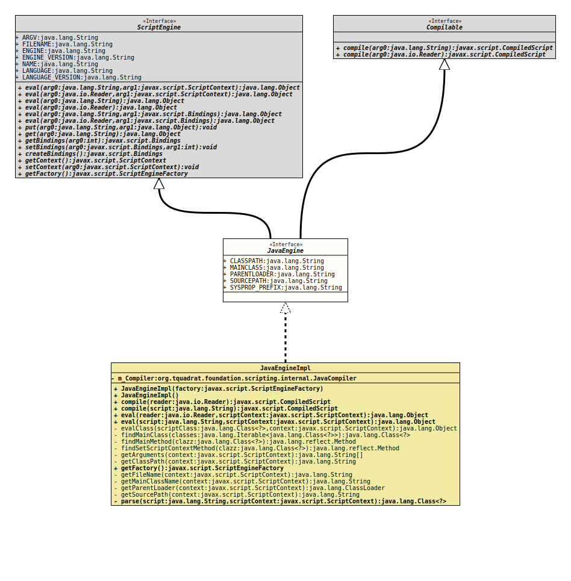

Interface JavaEngine
- All Superinterfaces:
Compilable,ScriptEngine
- All Known Implementing Classes:
JavaEngineImpl
@ClassVersion(sourceVersion="$Id: JavaEngine.java 878 2021-02-20 19:56:13Z tquadrat $")
@API(status=STABLE,
since="0.1.0")
public sealed interface JavaEngine
extends ScriptEngine, Compilable
permits JavaEngineImpl
This is the script engine for the Java programming language.
- Author:
- Thomas Thrien (thomas.thrien@tquadrat.org)
- Thanks to:
- A. Sundararajan
- Version:
- $Id: JavaEngine.java 878 2021-02-20 19:56:13Z tquadrat $
- Since:
- 0.1.0
- UML Diagram
-

UML Diagram for "org.tquadrat.foundation.scripting.java.JavaEngine"
{kind=link}
-
Field Summary
FieldsModifier and TypeFieldDescriptionstatic final StringThe name for the variable that holds the classpath: "classpath".static final StringThe name for the variable that holds the name of the main class: "mainClass".static final StringThe name for the variable that holds the class of the parent class loader: "parentLoader".static final StringThe name for the variable that holds the source path (the location for additional source files): "sourcepath".static final StringFor certain variables, we look for System properties.Fields inherited from interface javax.script.ScriptEngine
ARGV, ENGINE, ENGINE_VERSION, FILENAME, LANGUAGE, LANGUAGE_VERSION, NAME -
Method Summary
Methods inherited from interface javax.script.Compilable
compile, compileMethods inherited from interface javax.script.ScriptEngine
createBindings, eval, eval, eval, eval, eval, eval, get, getBindings, getContext, getFactory, put, setBindings, setContext
-
Field Details
-
CLASSPATH
The name for the variable that holds the classpath: "classpath".- See Also:
-
MAINCLASS
The name for the variable that holds the name of the main class: "mainClass".- See Also:
-
PARENTLOADER
The name for the variable that holds the class of the parent class loader: "parentLoader".- See Also:
-
SOURCEPATH
The name for the variable that holds the source path (the location for additional source files): "sourcepath".- See Also:
-
SYSPROP_PREFIX
For certain variables, we look for System properties. This is the prefix used for such System properties: "com.sun.script.java.".- See Also:
-